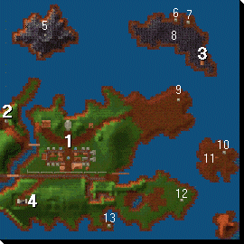

| 1. | New Sorpigal [City Map] |
| 2. | Abandoned Temple [Map] |
| 3. | Ghariks Forge [Map] |
| 4. | Goblinwatch [Map] |
| 5. | Obelisk and 2x horseshoes |
| 6. | NPC: Identification, takes 5% gold |
| 7. | NPC: Cures party one a day, takes 5% gold |
| 8. | Cook Pot, respawns enemies |
| 9. | Expert Ancient Weapons |
| 10. | Expert Water Magic |
| 11. | Shrine of Luck [Shrine List] pray here in July |
| 12. | Falagar the Gate Keeper - Your teacher from the game intro movie |
| 13. | Expert Staff Defense |
Local Enemies | ||
| Color | HP's | Type |
| Goblin King | 40 | Pretty much all magics work well against these guy's, there is no one that works best. |
| Goblin Shaman | 21 | |
| Goblin | 13 | |
| Mage | 207 | Pretty much all magics work well against these guy's, there is no one that works best. |
| Journeyman Mage | 21 | |
| Aprentis Mage | 6 | |
| Master Monk | 153 | Pretty much all magics work well against these guy's, there is no one that works best. |
| Initiate Monk | 73 | |
| Novice Monk | 30 | |
Leave us a message at: mgrounds@hotmail.com